- Startseite
- Referenzen
Referenzen · Videos · Echte Einsätze
Referenzen — der Roboter im Einsatz
Aufnahmen von echten Veranstaltungen: So läuft, gestikuliert und tanzt der Unitree G1 vor Publikum. Kein Studio, keine Animation — über 40 Veranstaltungen in Polen, Litauen, Deutschland, Tschechien und Rumänien.

Case Studies
Sieben Einsätze, ausführlich beschrieben — mit Ausgangslage, Ablauf und Ergebnis:
- LEX AI — ein Roboter als KI-Anwalt auf dem Langen Markt in Danzig, mit Beiträgen in Teleexpress (TVP) und bei TVP Danzig.
- Eco Studio ELECTRO-SYSTEM — Finale eines landesweiten Schulprojekts in Warschau, Bericht im TVP2-Frühstücksfernsehen, Titel Eko Partner 2026.
- Women in Tech Summit — rund 14 000 Teilnehmende im EXPO XXI in Warschau.
- WallStreet 30 — der Roboter unter 2 253 Teilnehmenden des größten Treffens von Privatanlegern in Polen, Hotel Golebiewski in Karpacz.
- Rekord-Gruppe auf der MSPO — zwei Tage am Messestand, als Botschafter einer Unternehmensgruppe vor reinem Fachpublikum.
- Kopernikus-Wissenschaftszentrum — Abend für Erwachsene „Wovon Roboter träumen“ im Warschauer Wissenschaftszentrum.
- Märchennacht in Przelewice — Einsatz im Freien nach Einbruch der Dunkelheit, in einem historischen Park.
Der Roboter in Bewegung
Kurze Clips aus echten Einsätzen — so sieht der Standardablauf aus: Begrüßung, Bewegung durch die Fläche, Interaktion, Fotos und Tanz.
Galas und Bälle
Bei der Dresdner Schlössernacht trat der Roboter auf einem Ball in einem Dresdner Palais auf — im Paillettensmoking mit Krone, auf dem roten Teppich, im Ballsaal und unter den Gästen.


Konferenzen und Bühnen
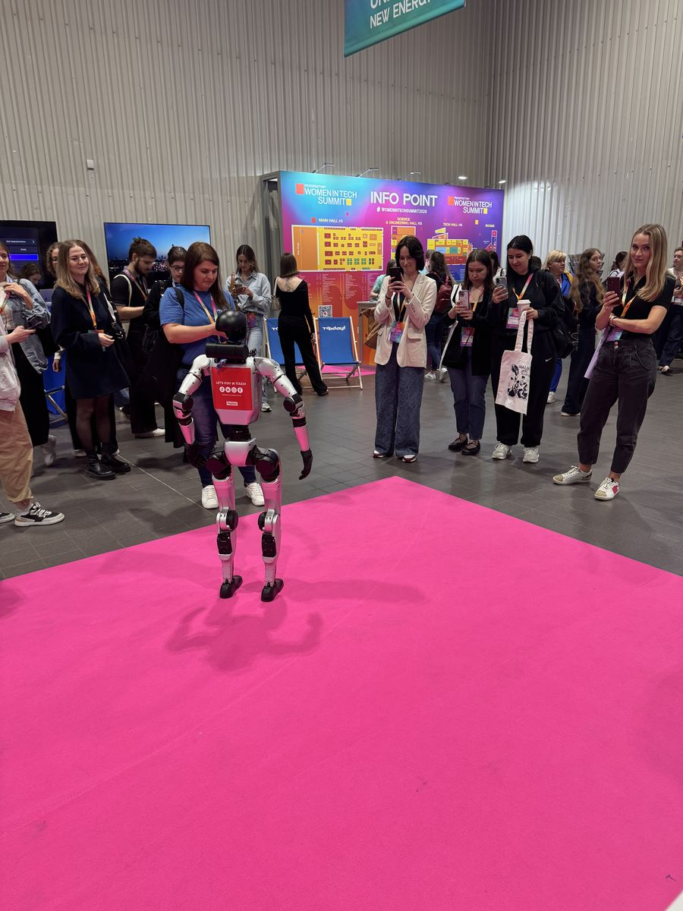
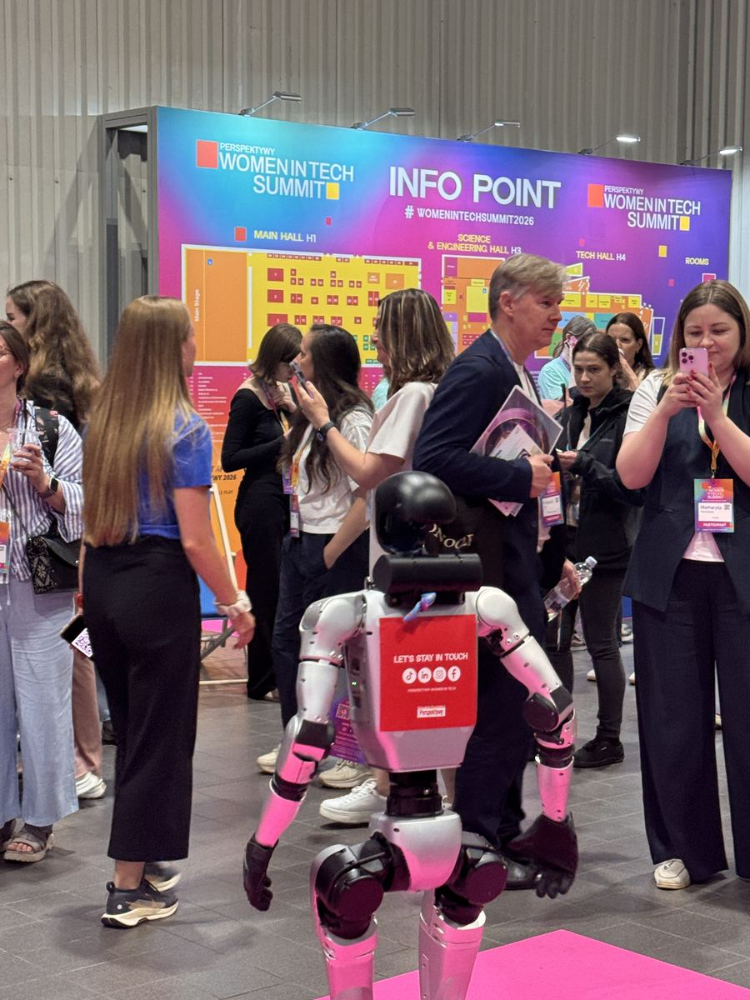
Beim Finale der 7. Staffel von Eco Studio, einem landesweiten Bildungs- und Umweltprojekt für Schulen in Polen, stand der Roboter mit den Moderatoren und Finalisten auf der Bühne. Der Veranstalter ELECTRO-SYSTEM verlieh 33bots den Titel Eko Partner 2026, und das Team des TVP2-Frühstücksfernsehens berichtete über das Finale.
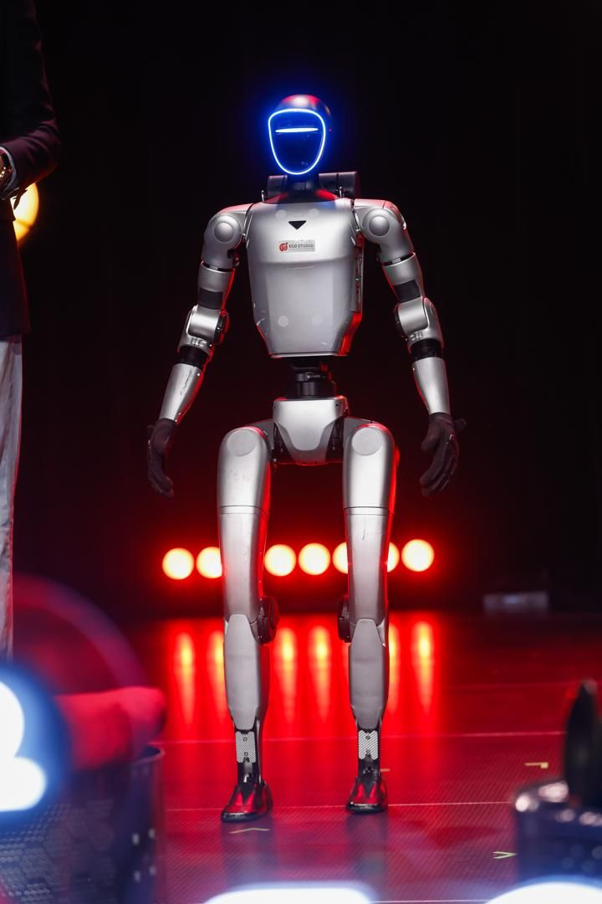

Messen und Stände
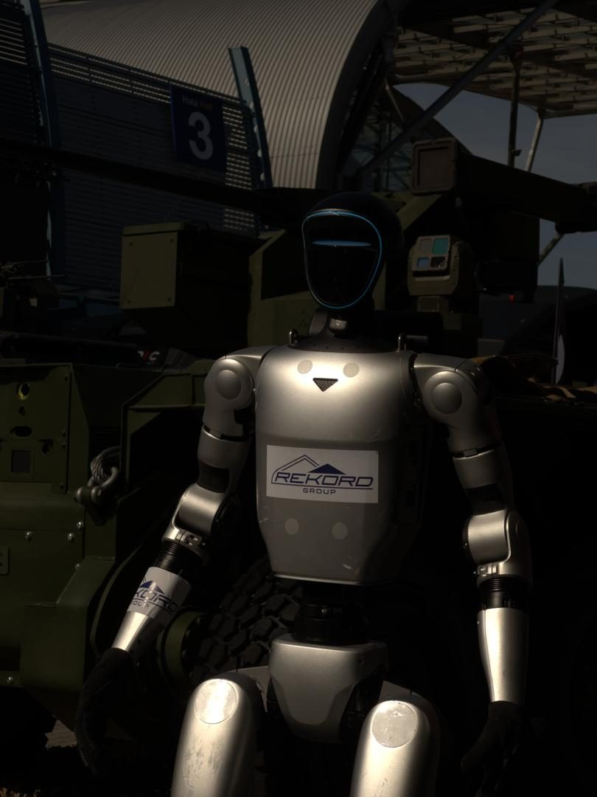
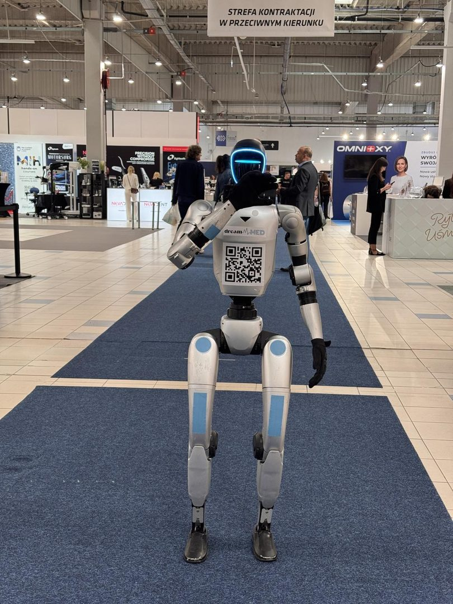
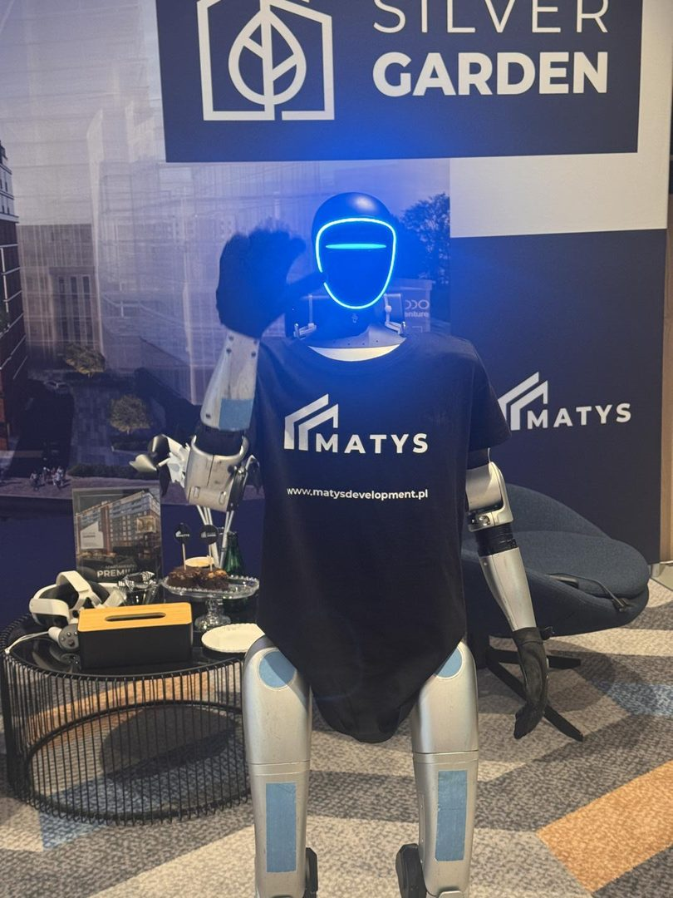
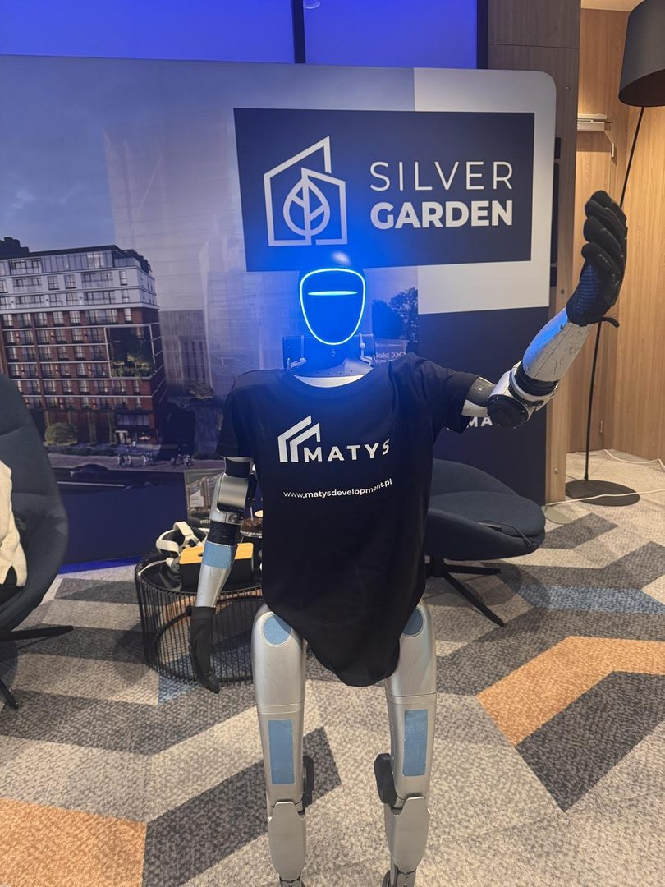
Marken, Eröffnungen und Promotion


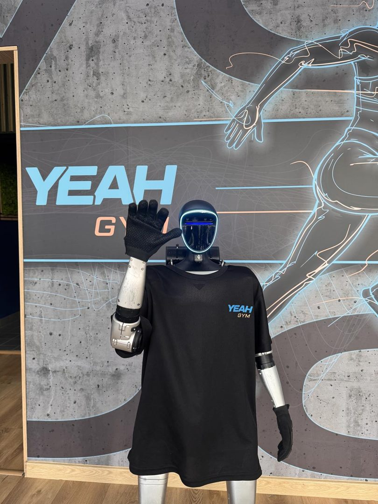
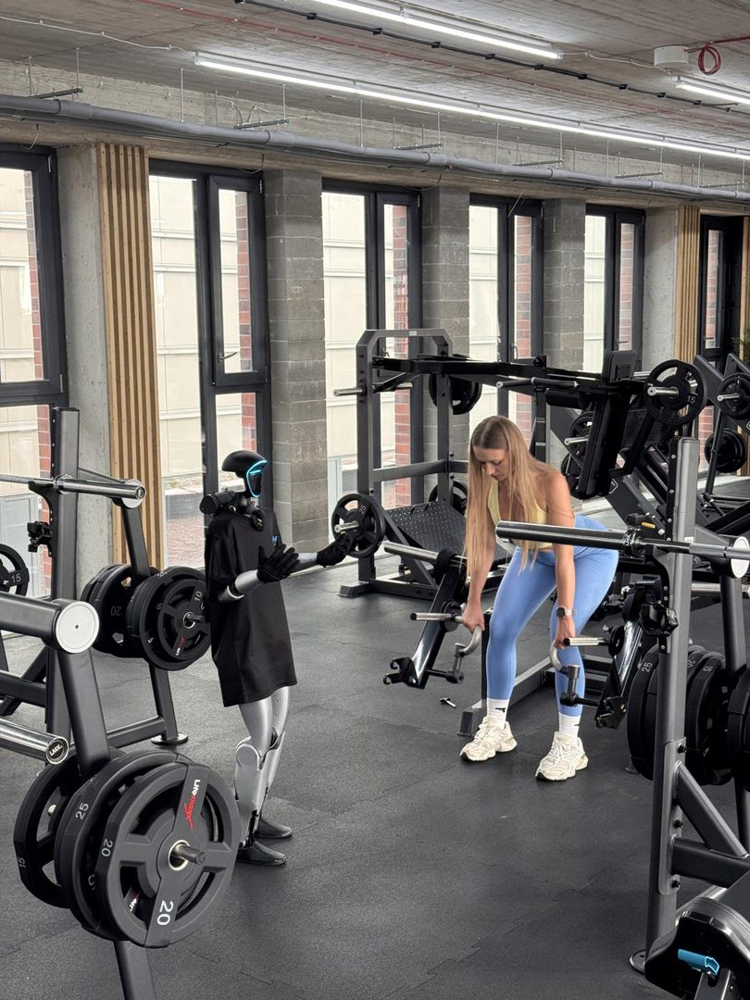

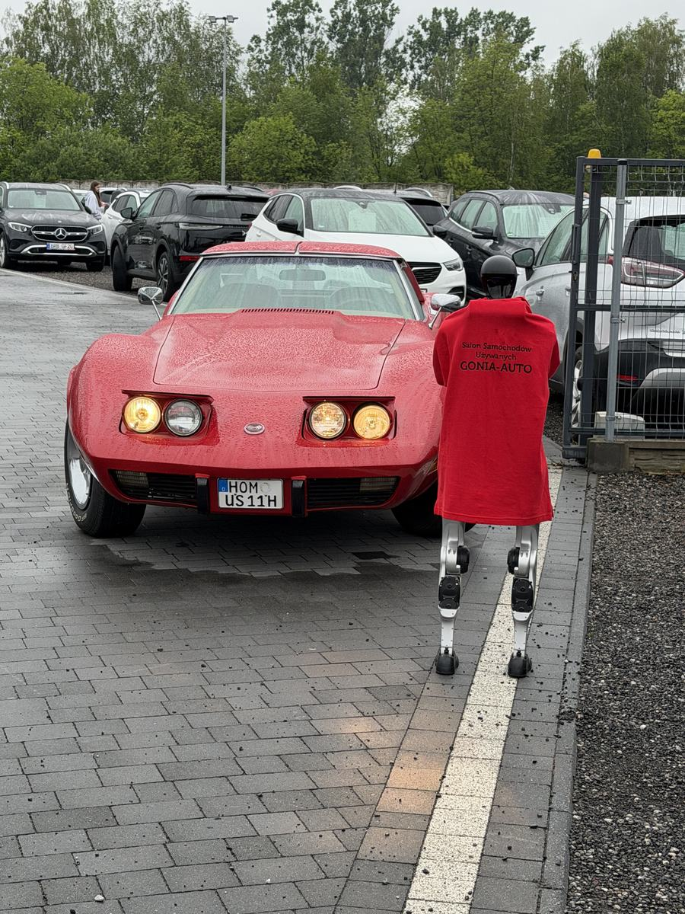
Feste, Bildung und Familie
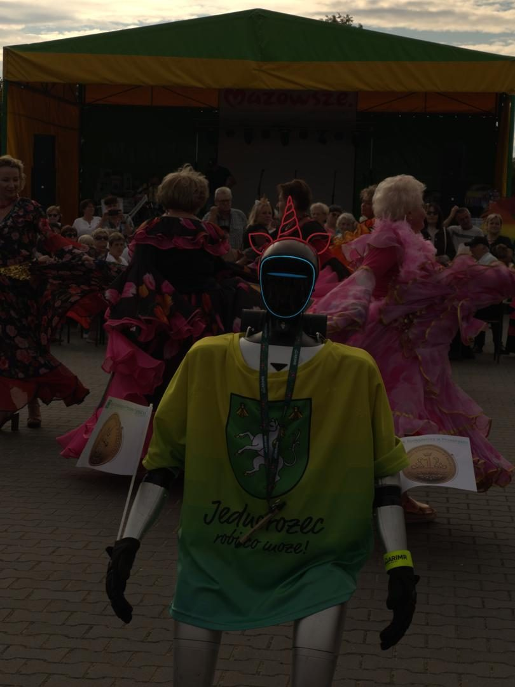


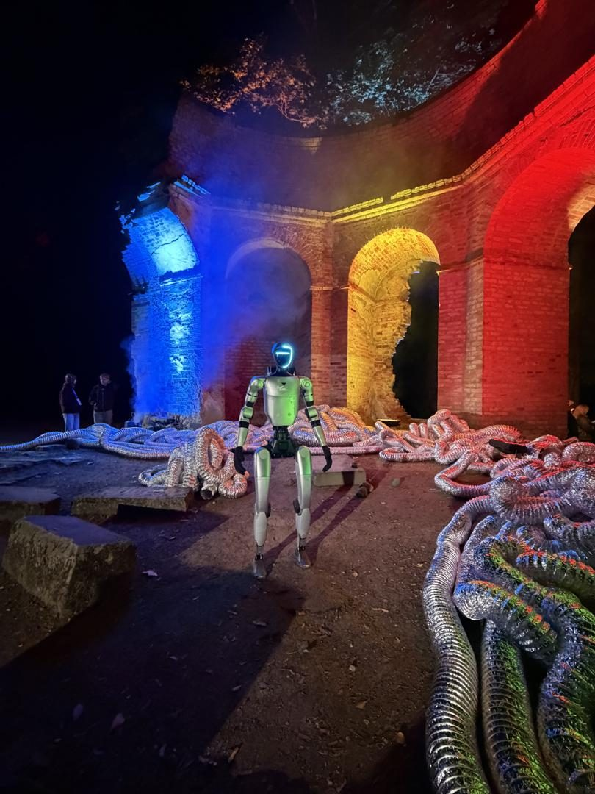

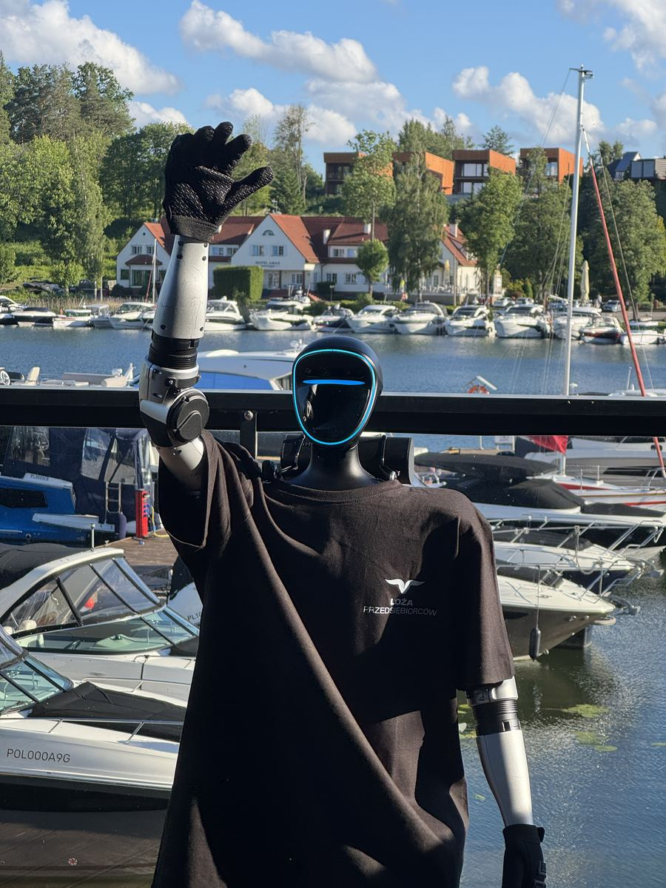

Echte Aufnahmen, echter Ablauf
Alle Aufnahmen auf dieser Seite stammen von realen Veranstaltungen — nichts davon ist im Studio nachgestellt oder animiert. Was Sie sehen, ist der Standardablauf: Der Roboter begrüßt Gäste, geht durch die Fläche, gestikuliert, posiert für Fotos und tanzt eine Choreografie zur Musik. Auf der Brust trägt er bei Kundeneinsätzen das Branding der jeweiligen Marke — bei uns ohne Aufpreis.
Häufige Fragen
Ja — alle Fotos und Videos auf dieser Seite stammen von realen Veranstaltungen. Wir arbeiten weder mit Animationen noch mit gestellten Studioaufnahmen.
Auf über 40 Veranstaltungen in Polen, Litauen, Deutschland, Tschechien und Rumänien — von der Dresdner Schlössernacht über den Women in Tech Summit in Warschau bis zur Rüstungsmesse MSPO in Kielce.
Ja. Ihr Logo und ein QR-Code kommen auf die Brust des Roboters, der ganze Auftritt passt zum Charakter der Veranstaltung — vom Firmen-T-Shirt bis zum Paillettensmoking mit Krone. Das Branding ist im Preis enthalten.